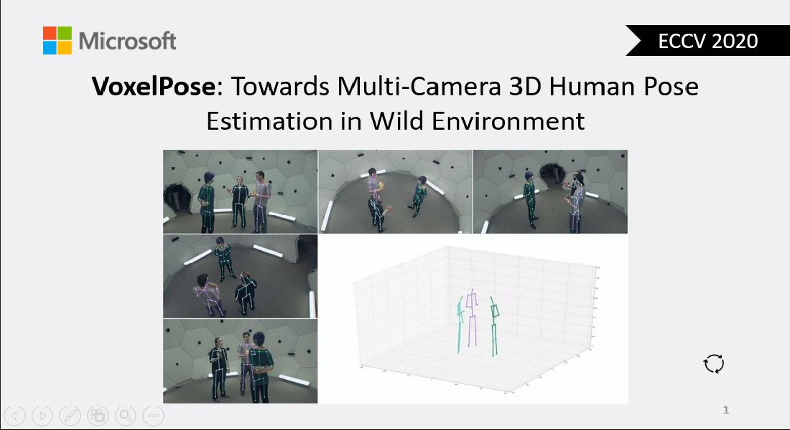

Seminars
New

Topic:Adversarial attack based on disrupting representation
Date:Sep 11, 2020
Abstract: Almost all current adversarial attacks of CNN classifiers rely on information derived from the output layer of the network. There have been a few recent transfer-based works delving into the feature space of DNNs for both attacks and defenses. However, they may focus on some layers which are not optimal. So, it is necessary to provide a more detailed analysis of layer-wise transfer properties. two parts are included in my report:
(1) Review FGSM/transfer-based attack methods.
(2) A work which presents a new adversarial attack based on the modeling and exploitation of class-wise and layer-wise deep feature distributions.

Topic:VoxelPose
Date:Sep 11, 2020
Abstract: Accurate 3D human pose estimation has been a longstanding goal in computer vision. However, till now, it has only gained limited success in easy scenarios such as studios which have little occlusion. In this talk, I will present a recent work termed as VoxelPose which allows us to reliably estimate and track people in crowded scenes. In contrast to the previous efforts which require to establish cross-view correspondence based on noisy and incomplete 2D pose estimates, this work presents an end-to-end solution which directly operates in the 3D space, therefore avoids making incorrect hard decisions in the 2D space. To achieve this goal, the features in all camera views are warped and aggregated in a common 3D space and fed to Cuboid Proposal Network (CPN) to coarsely localize all people. Then Pose Regression Network (PRN) is proposed to estimate a detailed 3D pose for each proposal. The approach is robust to occlusion which occurs frequently in practice. Without bells and whistles, it significantly outperforms the state-of-the-arts on the benchmark datasets.